Loblaw Digital · 2023
Improving operational efficiency by optimizing grocery substitutions
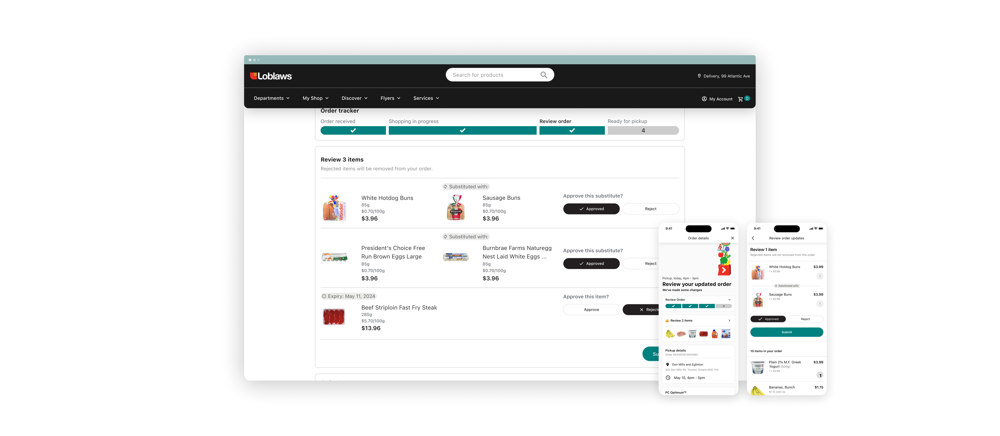
The asynchronous substitution management project (Async Subs) was highly successful. It enabled customers to review grocery substitutions asynchronously instead of over a phonecall, resulting in savings of over 60,000 labour hours and over $3M in labour costs in just 2 months.
Context
Substitutions cause churn and are costly
Grocery substitutions are when a customer's orginal items can't be fulfilled, and are replaced with something similar. This happens because Loblaws (or any other grocery brand) can't always guarantee that a customer gets an item; another online order could've snagged the last item or since items are picked directly from a physical store, product stock can't be accurately predicted. As a result, substitutions help the customer by getting them a similar item, and help the business by still making a sale.
Though substitutions don't sound that bad, they were a leading cause for churn for 20% of customers. To mitigate this stores send emails and even call customers prior to receiving their items. Though customers love the call, Operations teams call it inefficient. The call gave customers the flexibility to request new items entirely, which required employees to go out to the store and pick those items sometimes minutes before the customer arrives for pick up (me shown below, picking an item).

Problem
Existing digital experiences were read-only
Though customers could use their app or the website to see the status of their order, their order updates were shown as read-only, and thus they relied on the call to make changes. The existing system was also limited to substitutions or out of stock items, whereas the scope of the call could also cover things like expiry dates.
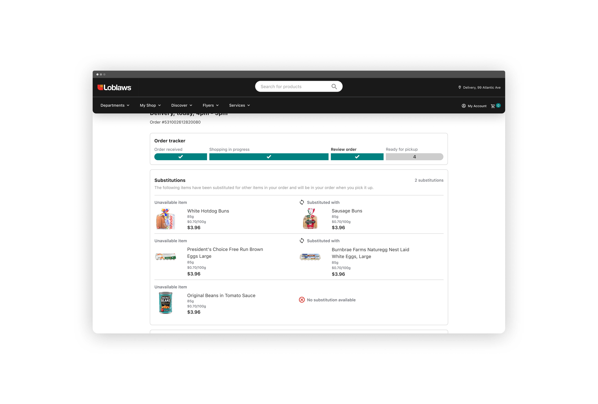
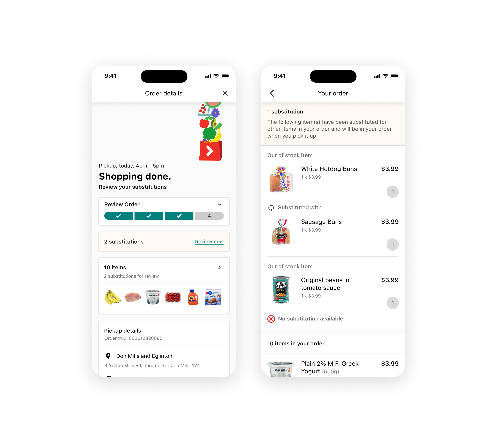
Process
Identifying the right problem first
Before this project even kicked off, the Product team on the Operations side came to us with the solution already picked out. Though it made sense logically, our team (on the customer facing side) didn’t know whether it was highest priority for us. We wanted to be involved from the problem identification phase, rather than be brought in to execute on strategy already thought out.
I asked our Operations team if we could take a step back and work together on identifying all of the problems that plague substitutions, and co-create solutions to build. What ensued was a series of workshops to align on the various problems and narrow down a solution set to present back to our leadership. One of the most important teams involved during workshopping were our developers — these teams helped us identify the effort required for each approach.
In the end, the highest impact and lowest effort solution ended up being Async Subs regardless, however, it aligned everyone on why and also helped populate our backlogs with additional opportunities.
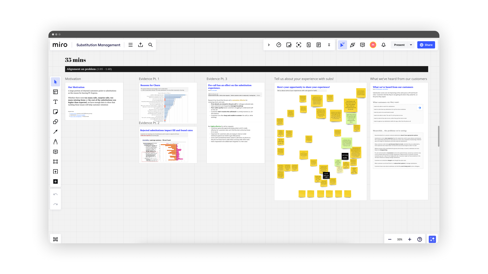
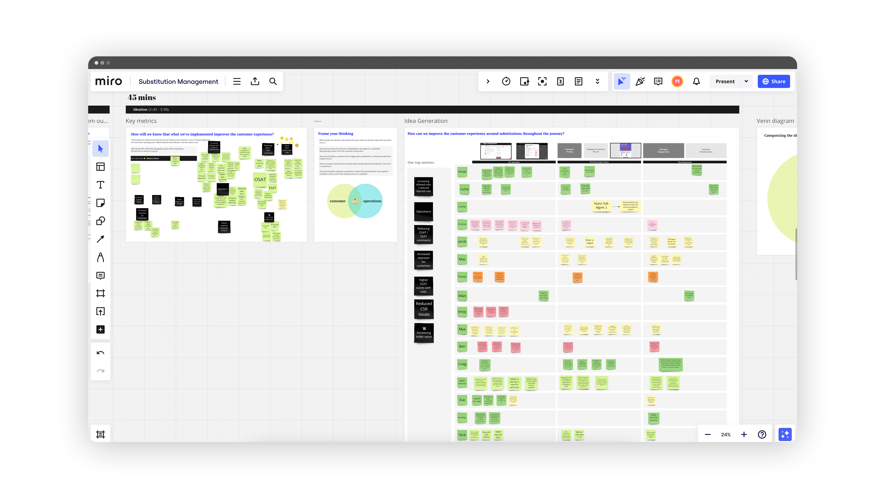
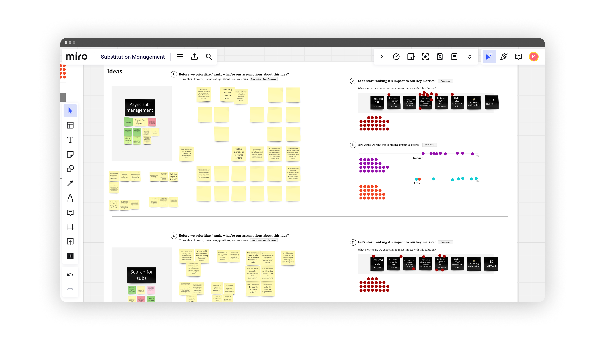
Design
Approving and rejecting item exceptions
That larger alignment allowed us to focus in on the post-order process for customers — as that’s when substitutions happened. I worked closely with the Ops team to map out the blueprint at a macro scale to validate where the impacts would be, and also understand the ideal path.
Specific to the user-interaction, we wanted to constrain users to only be able to select whether they approve or reject a item; this included substitutions and items that could be expiring soon. We strictly avoided having an open text-field to reduce variability in the post-order process.
At this point, I was in lock-step with my dev-team to make sure nothing we were proposing impact our original effort estimates.
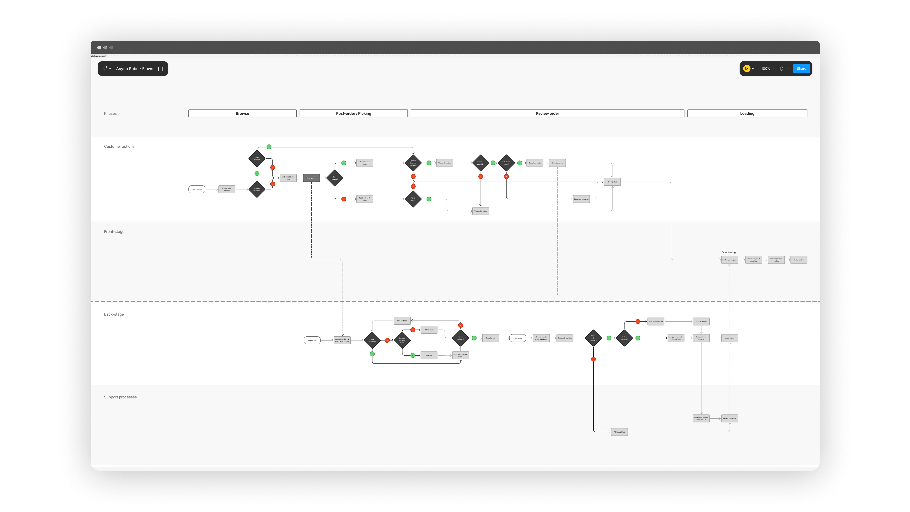
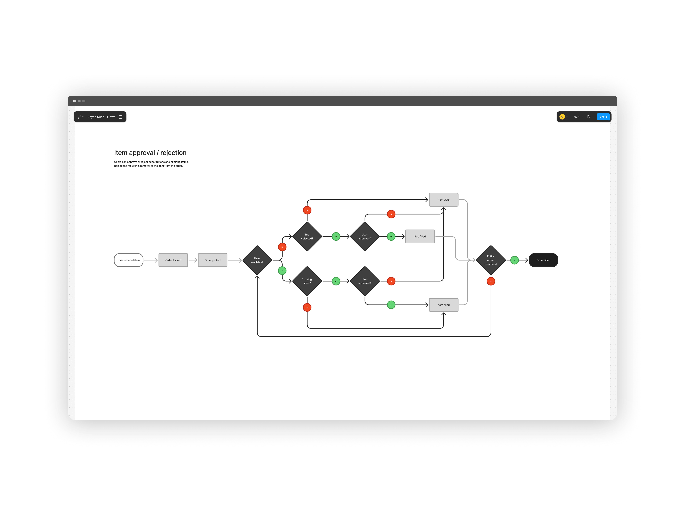
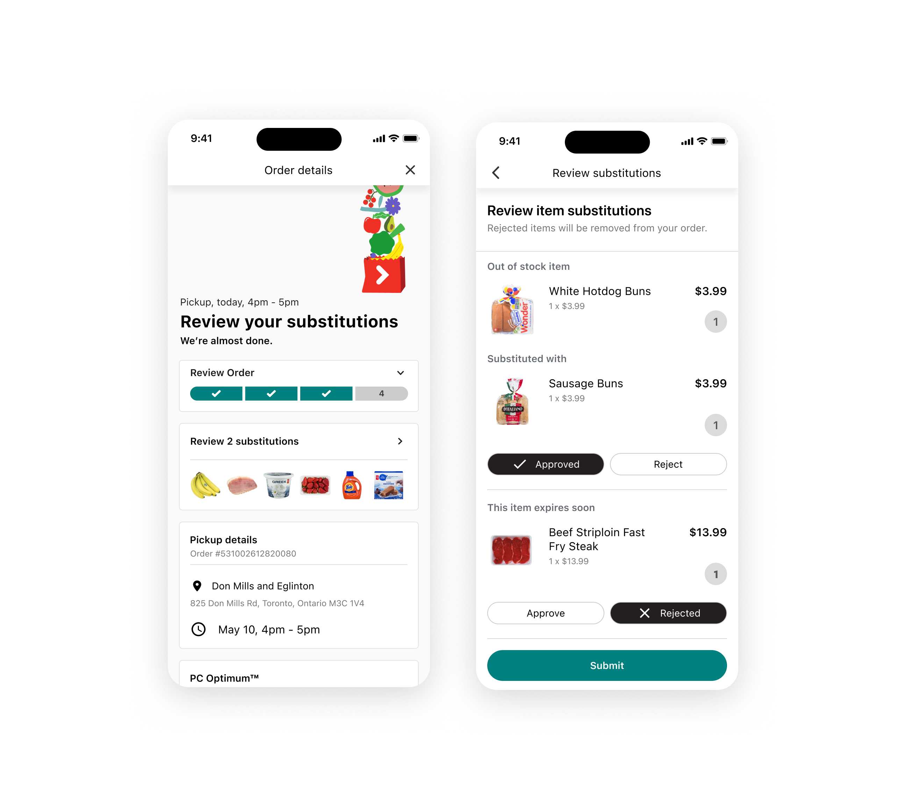
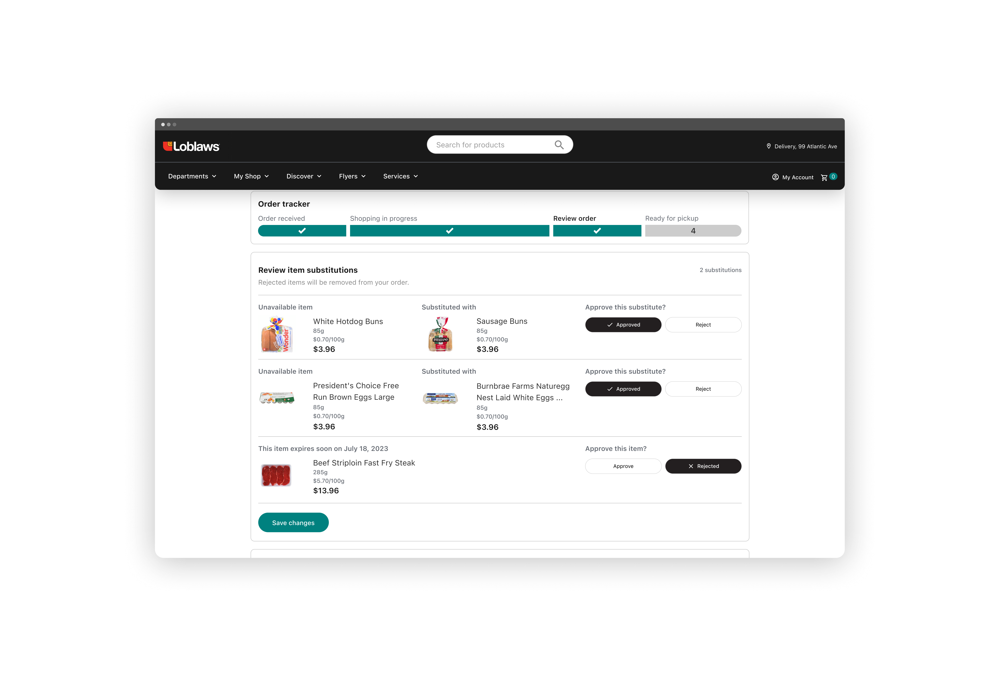
Iteration
Spinning on features, then removing them
Despite this async design, the phone call was still the fall-back solution. If customers didn't see their app in-time, or missed the review window, they could still receive a call to review their order. An additional scenario came up where a user could miss the submit button and thus miss the submission. As a result, since we needed a review window anyway, I designed an approach for auto-submission of selections once the review window closes.
Though it solved some customer edge cases, Ops was skeptical because of the operational impacts of batch submissions on efficiency. Similarily, we started to question about the effectiveness of the entire solution and if a phone call was even needed as a fall-back. To test it's effectiveness, we wanted to explore a toggle to see if users would still request one, despite the async approach.
In the end, usability-testing feedback showed users wanted a submission to lock in their selections; and Ops said the toggle wasn't needed since it would ultimately get removed, regardless.
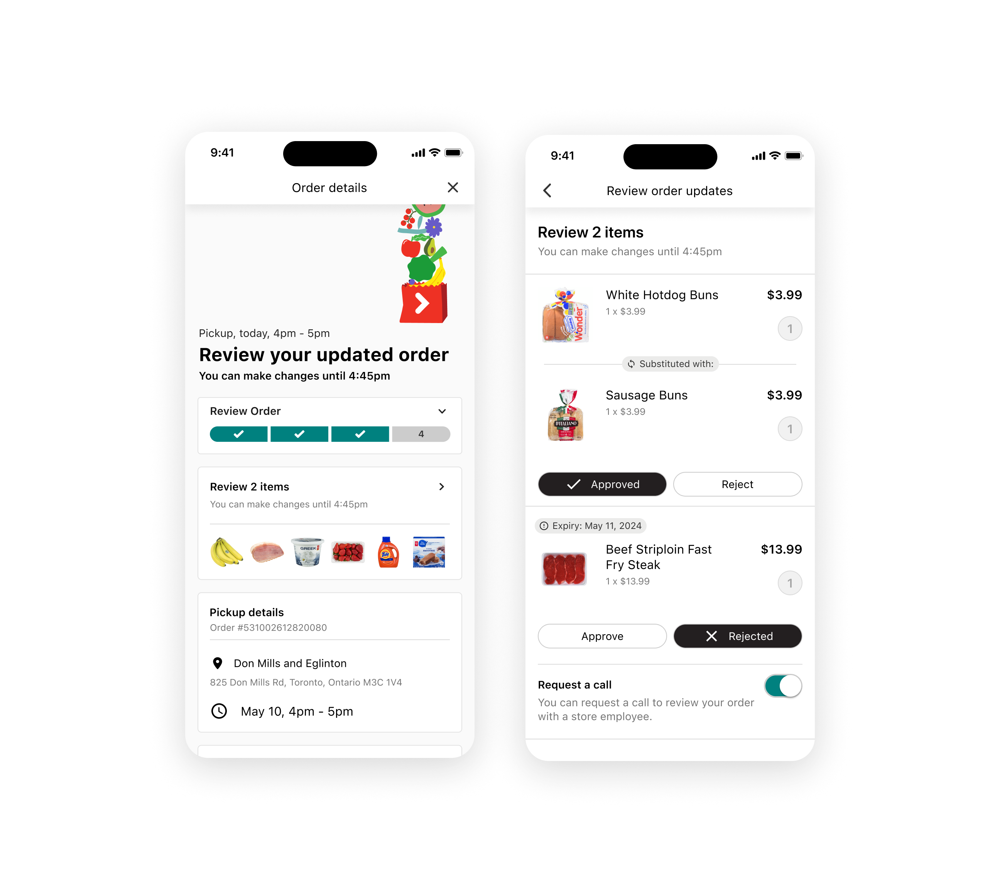

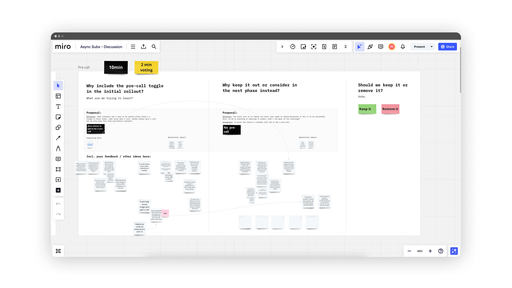
Outcomes
Finalizing and launching
We launched, and within 2 months had incredible results. Though we had hypotheses around customer experiences faltering due to the lack of the call, customer adoption reached over 60%. In the same period, the program contributed to 60,000 hours saved for store employees and over $3M in projected annual cost savings as a result of operational efficiency.
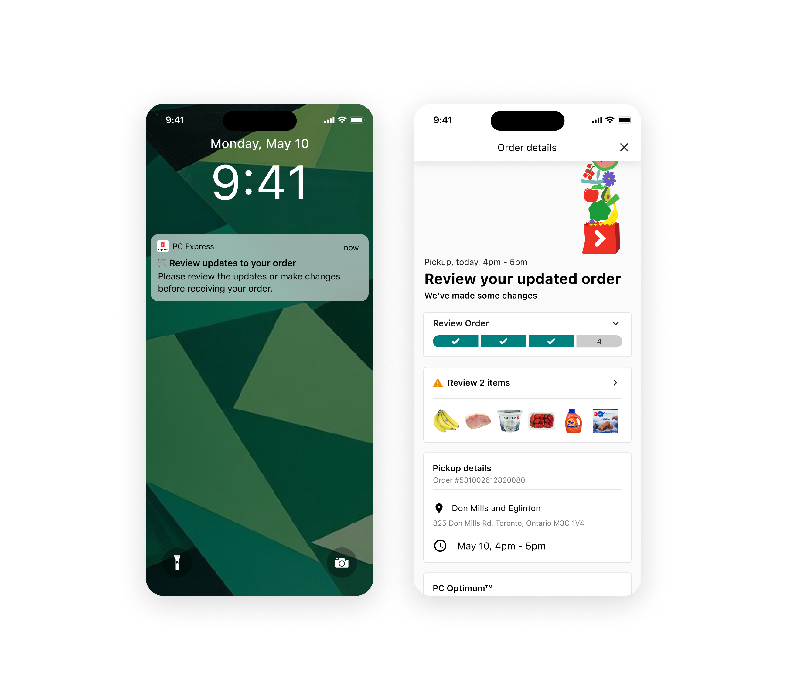
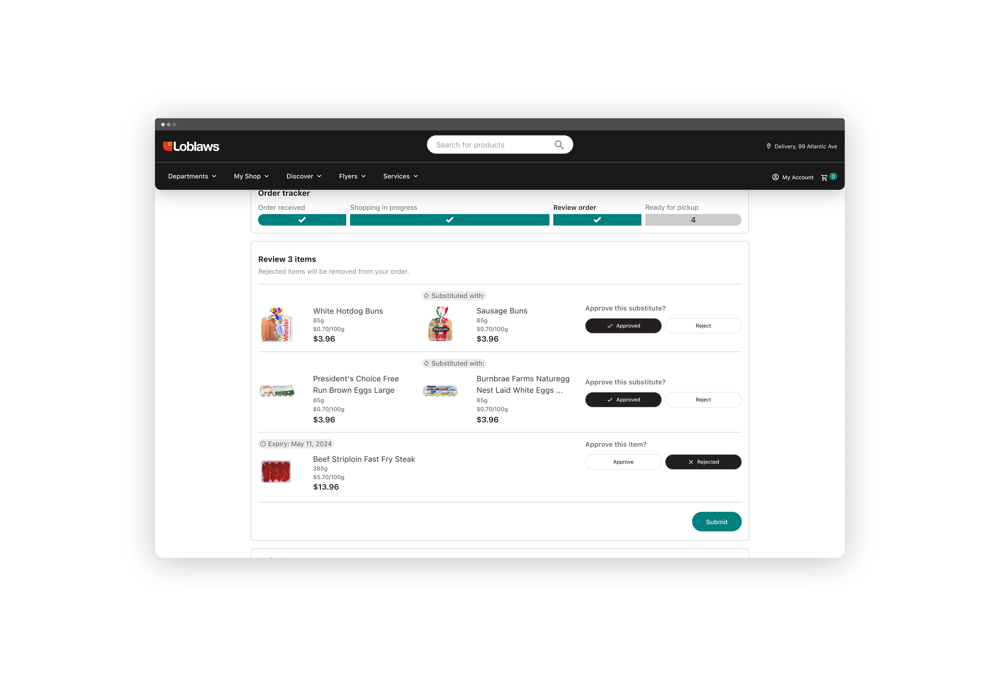
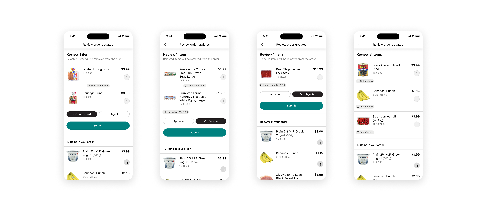
Learnings
Balancing business needs with customer wants was a constant theme throughout this project. The Operations team was initially hesitant about the workshops, as they felt confident in their proposed solution, but ultimately found value in the process as the outcomes helped inform the roadmap.
Despite the contextual complexity of the problem, the solution itself remained intentionally simple. I enjoyed owning this project end to end—from discovery and solution definition through detailed design and launch. It was a rewarding challenge and an opportunity to design something that made a meaningful impact for both store employees and customers.